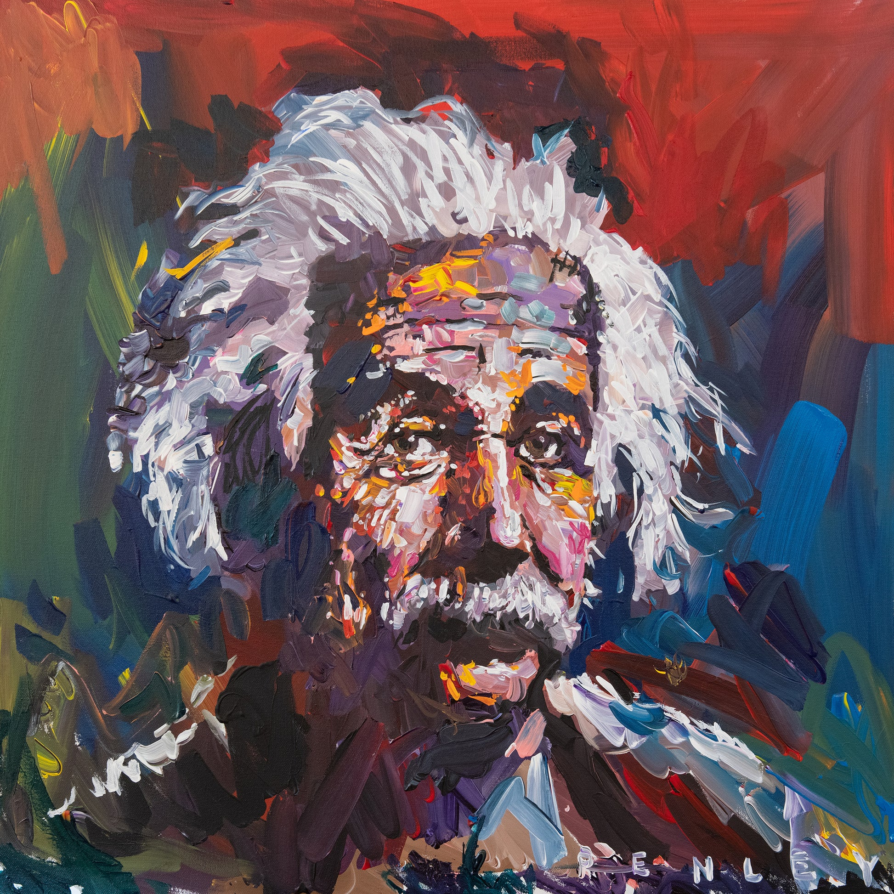
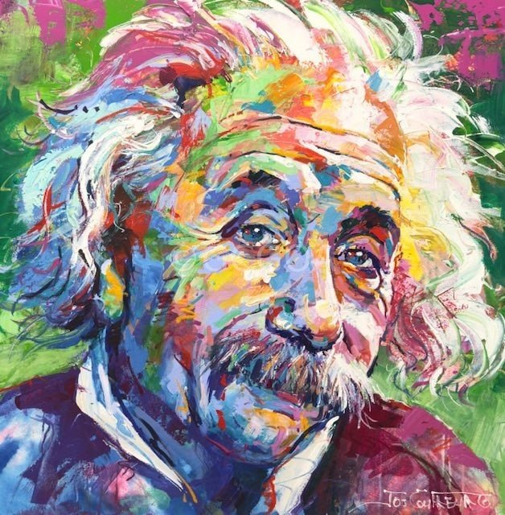
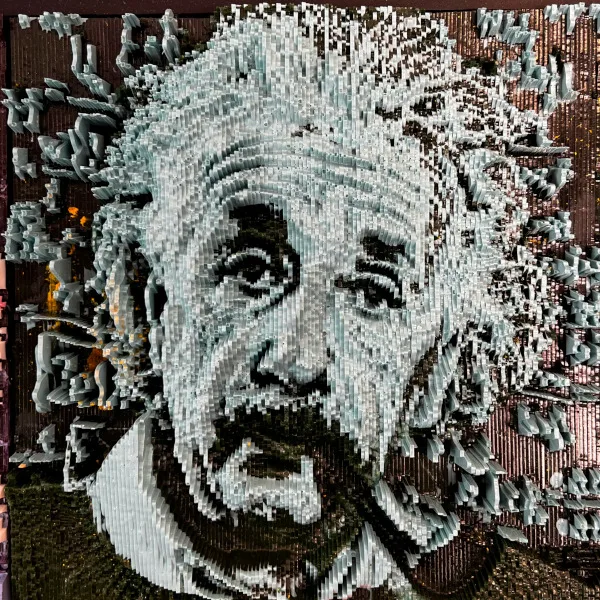
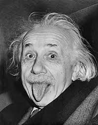

.jpg)

.jpg)



The embodiment of genius and the pre-eminent scientist of the modern age, his theories and discoveries have profoundly affected the way people view and understand the world and their place in it. Einstein was also known as a philosopher and humanist who was keenly interested in and concerned about the affairs of the world. His sagacious, wise, and humorous quotations, letters, and articles are widely used throughout popular culture as well as in historical and academic works. Einstein’s name and image are instantly recognizable everywhere in the world. Albert Einstein was a theoretical physicist and the most famous scientist in human history. He developed the general theory of relativity, one of the two pillars of modern physics, alongside quantum mechanics. He is perhaps best known in popular culture for his mass/energy equivalence formula E=mc2. In 1921 he received the Nobel Prize in Physics for his “services to theoretical physics”, and in particular his discovery of the photoelectric effect, a pivotal step in the evolution of quantum theory.



The loosely translated Chinese proverb states that “the journey of a thousand miles begins with a single step.” In other words...you gotta start somewhere! Have you committed to transforming your instruction for the new WI science standards? Depending on your starting point, your journey may only take a few tweaks or it may take a full reset and a completely fresh approach to teaching science. Either way, you need to take that first step to reach your destination. Wisconsin’s science standards are based off of the Next Generation Science Standards. The vision laid out by these standards pushes us to challenge our students to deeper understanding through deliberate sense-making activities. Certainly, the way most of us learned science would not have lived up to this vision.
Isn’t it exciting when you get a package delivered in the mail? Well, that’s how I felt last month when my I got my copy of Ambitious Science Teaching. I read an overview of this book and it sounded like it was just the thing to do as a professional development book study during the summer. I’m almost finished with the book and I can’t wait to use it for discussion and reflection during this summer’s STEM-PLC Virtual Academy. We are always looking for the best way to do things here at Einstein, so why not try an online, webinar-formatted, ongoing professional book study?
I once had a student complain after I explained that they needed to cite their sources. “This is not English class!” he proclaimed. I politely requested that he refrained from speaking then, as he was using his vocabulary to construct sentences, which was clearly a skill he picked up in an English class. It seems ridiculous to think that we could teach science in the absence of English Language Arts (ELA) and math. Yet, the formal education system has constructed silos that we call subjects and licensed educators accordingly. In this fourth blog post in the series on the 5 innovation of the Next Generation Science Standards (NGSS), we will explore how ELA and math are intentionally integrated into the standards, as well as how educators can take their instruction to a new level and tear down the silos!